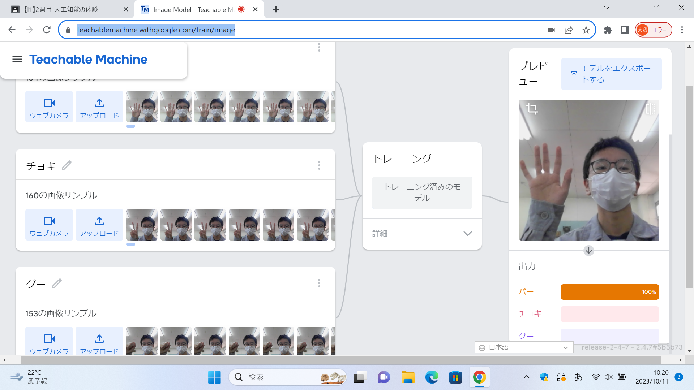
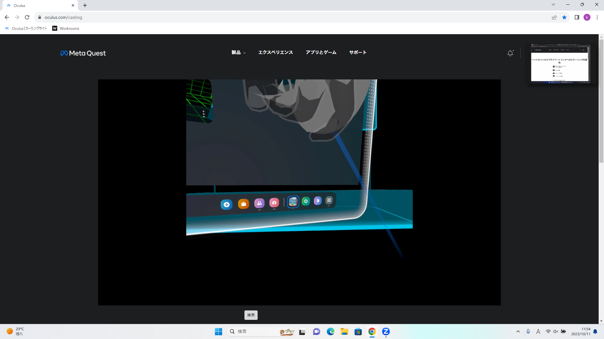

第2週目
2-1 １週目のレポートをHTMLで作る
１週目のレポート
1.内容
githubを用いてレポートを作成した。
内容と感想を書き、プログラムを組んで
文字を押すとホームページにつながるようにした
2.感想
今回は文字を書き換えることがほとんどだったから
実際にプログラムを組んだりしてWEBページを作成
してみたいと思った。
URLを埋め込んだり画像を入れたりできると知って
面白いと思った。
2-2 機械学習体験

1.内容
Teachable Machineというサイトを使った。
グーとチョキとパーの画像をそれぞれ撮影して、
そのデータをもとに何のポーズをしているか判別させた。
2.感想
サイト一つで画像を判別するAIを体験できてすごいと思った。
今回は150枚ずつしか撮影していないけど、
もっと撮影してみたらとうなるか気になった。
画像を判別するAIを使ってゲームを作ってみたいと思った。
2-3 VR（バーチャルリアリティー：Virtual Reality）会議室の体験

1.内容
メタクエストを使ってVRを体験した。
コントローラーを操作して絵を描いたり、会議室に入り他の人と会話した。
2.感想
スマホの機能を使ったVRは体験したことがあったけど、
操作できるようなVRは初めて体験したから楽しかった。
これを使って色んなゲームをしたり日常生活に活用してみたいと思った。
ただ、ピントがあいにくかったり操作が分かりにくくて扱いが難しかった。